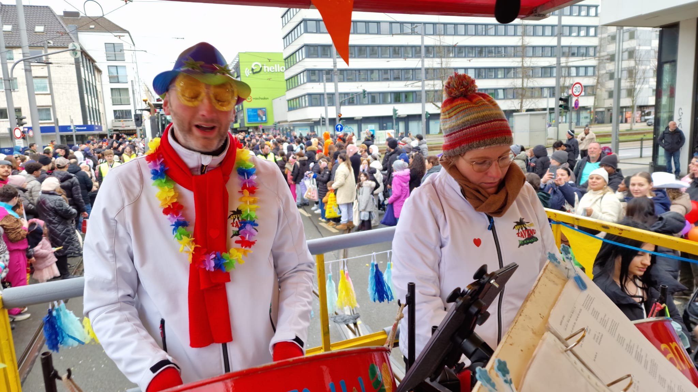
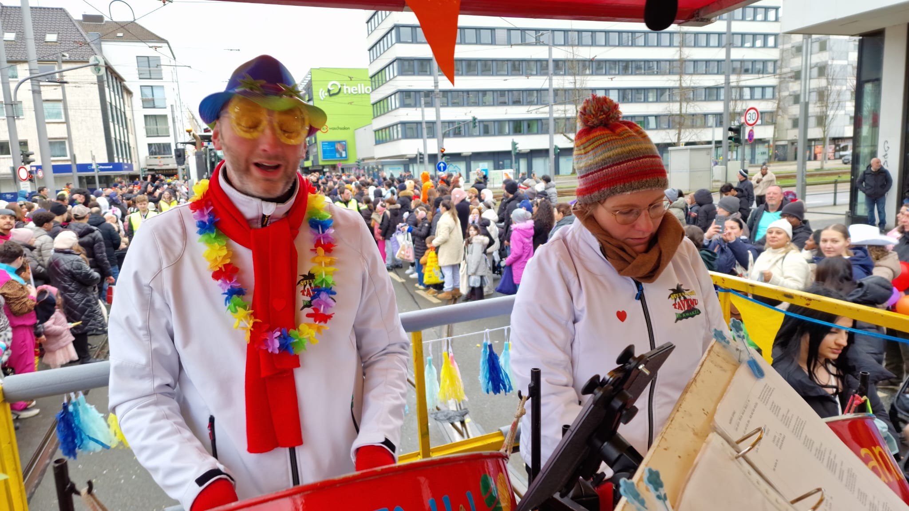

Het is weer tijd voor een nieuw Tavenieuwsje. Sterker nog, je bent die nu gewoon aan het lezen!
Het vorige Tavenieuwsje zag er anders uit als jullie gewend waren, en die lijn trekken we voorlopig maar even door. We hebben geen negatieve reacties gekregen, dus we gaan er daarom gemakshalve maar van uit dat het zo prima is. Of in ieder geval dat we op een goede weg zitten zo. Maar laat gerust weten wat je er van vind! We hebben nog wel meer ideetjes, daarover meer op de ledenvergadering op 2 maart.
In deze editie hebben we weer een paar verslagen van optredens en een tussentijdse oudijzerophaaldienst. In het vorige Tavenieuwsje stond veel over de steelband, alles door Sander geschreven. We proberen nu ook anderen zo ver te krijgen om een stukje aan te leveren. Niet iedereen voelt zich een geweldige schrijver, maar wij als redactie hebben een tip: ChatGPT. Het laatste verhaaltje in dit Tavenieuwsje is met behulp van deze AI-dienst geschreven. Dus als je denkt het zelf niet te kunnen, raadpleeg dan ChatGPT, en je ziet dat er dan best iets aardigs uit komt rollen.
We hebben ook een nieuwe rubriek, genaamd "mijn 2e hobby". Sander trapt hiermee af. Voor ons als Tavenu-ers staat muziekmaken natuurlijk op de eerste plaats, maar de meesten zullen daarnaast ook vast nog wel meer hobby’s hebben. En daar zijn we ook wel benieuwd naar. En het hoeft niet hoe gekker hoe beter te zijn, als je gewoon van lekker kruiswoordpuzzeltjes maken houdt, vinden we ook leuk om daar meer over te lezen.
Op zondag 24 januari was het weer tijd voor de jaarlijkse hardloopwedstrijd in Uithoorn, ook wel Uithoorns Mooiste genaamd. Een dag waaruit je uit meerdere afstanden kan kiezen om te gaan lopen. Voor de kleintjes is er de 1 kilometer, en dan nog de 5km, 10km en 10 Engelse mijlen. De steelband stond ergens langs de route waar eerst de deelnemers aan de 10km en 10 Engelse mijlen voorbij kwamen, en even later de renners van de 5km. Later kwamen dan eerst ook weer de lopers van de 10km voorbij en weer wat later de fanatiekelingen van de langste afstand.
Het was behoorlijk koud die dag, maar dat is eigenlijk meestal zo met Uithoorns Mooiste, want die is altijd in januari. Maar door te blijven spelen bleven we nog een heel klein beetje warm. Gelukkig waren er veel deelnemers, dus hadden we een hoop publiek. Al moet ik daarbij wel een kleine kanttekening plaatsen dat ze wel erg snel voorbij liepen… Maar evengoed wel leuke reacties gehad, ook van de mensen die zelf als toeschouwer langs het parcours stonden en even kwamen luisteren naar ons.
Zaterdag 7 februari arriveerde ik net na 9 uur bij het bedrijf van Bob de Jong. Er werd al hard gewerkt door de heren en dame. Nog voordat ik mijn handschoenen aan had kreeg ik van Pieter-2 (oftewel Sander) al het vriendelijke doch dringende verzoek om een stukje te schrijven voor het Tavenieuwsje. Dus dan eerst maar een paar foto’s gemaakt.
Ondertussen kreeg de ene na de andere radiator een plek naast de archiefkasten in de aanhanger. Toen die vol was werd het wachten op Jan en Theo met de auto. Gelukkig was er koffie en heet water (Koos was het theezakje vergeten!) en een lekker koekje. Ondertussen arriveerden de heren met de auto en het nodige ijzer, o.a. gescoord bij een verbouwing in de Kuil. Deze nieuwe bewoners weten nu ook dat wij blij worden van oud ijzer.
Na de koffie ook de auto volgeladen. En rond half 11 vertrokken we richting Dukdalf in Mijdrecht. Opbrengst 2700 kg ijzer. Weer een mooie opsteker voor een paar uur werk. Wij blij en Bob heeft (tijdelijk) weer wat ruimte. Alle helpende handen weer bedankt en tot 18 april want dan gaan we weer met z’n allen op pad in De Kwakel en omgeving.
Op zondag 15 februari 2026 vertrokken we vroeg in de ochtend met de steelband-podiumwagen en instrumentenaanhanger naar Duitsland. Sander had de route helemaal uitgeschreven, maar toch misten we een afslag, dus we moesten een stukje terug om het wegrestaurant te bereiken, waar we met alle steelbandleden hadden afgesproken. Het restaurant was nog niet open, maar gelukkig hadden we zelf koffie en thee bij ons, natuurlijk met iets lekkers erbij. De plaspauze moest maar even wachten tot een volgende stop.
Ruim op tijd kwamen we in Düsseldorf aan, waar we enthousiast begroet werden door de “Zugleiter”, de optochtbegeleidster die aan de steelband was toegewezen. De podiumwagen werd snel opgebouwd en versierd, waarna we aan de optocht konden beginnen. Het publiek langs de kant was super enthousiast en genoot af en toe van de zon. Wel was het heel koud, maar daar waren we op gekleed.
Na afloop van de optocht gingen we schnitzel (of iets anders lekkers) eten en naar een B&B hotel. Op de kamer van Conny en Jolanda kwamen alle steelbandleden en onze chauffeur Ton en begeleider Theo gezellig nakletsen en wat drinken.

De volgende ochtend gingen we na het ontbijt naar de 2e optocht in Krefeld. Dit was een heel grote optocht met veel praalwagens en deelnemers. Ook daar was het publiek enthousiast en genoot van de Caribische klanken van de steelband. Aan het einde van de optocht ging het helaas regenen, dus met alles weer inpakken zijn we aardig nat geworden.
Onderweg naar huis hebben we nog gezellig met zijn allen gegeten. Daarna hebben we de karren en de instrumenten weggebracht en zijn we thuis onder de wol gekropen. Het was weer een gezellige carnaval.

Mijn naam is Sander Meijer, inmiddels al ruim 40 jaar lid. Begonnen bij de drumband toen ik 10 jaar was, en later kwam daar de steelband bij. Na het wegvallen van de drumband is het dus alleen nog maar slaan op olievaten. Bij de “gewone” steelband speel ik de bas, en bij de loopsteelband de tenor. Verder geef ik de leerlingen les en ben de contactpersoon voor optredens.
Naast de muziek ben ik tegenwoordig bezig met postcrossing. Dat is simpel gezegd ansichtkaarten versturen en ontvangen. Vroeger had ik wat penvriendinnen, waar je brieven naar stuurde en van kreeg. Maar doordat alles tegenwoordig digitaal gaat, is dat er nu eigenlijk niet meer echt.
Totdat ik de website postcrossing.com tegenkwam. Dit is ooit 20 jaar geleden tot stand gekomen, en het biedt mensen een platform om kaarten naar elkaar te sturen. Gewoon omdat het leuk is om af en toe eens iets door de brievenbus te krijgen. Het principe is vrij simpel: je meldt je aan op de website en je krijgt een adres van iemand anders die daar ook een account heeft. Je krijgt er een specifieke code bij die je op de kaart moet zetten. Als dan diegene jouw kaart ontvangt, moet dit nummer ingevoerd worden op de website, en krijg jij een berichtje dat je kaart bezorgd is. Daarna komt jouw adres beschikbaar op de website voor iemand die op dat moment aangeeft dat hij of zij een kaart wil sturen. En dan krijg jij na een paar dagen (of weken) een kaart van een willekeurig iemand.
En het leuke is dat dit wereldwijd is, dus je moet je kaarten echt overal heen sturen en ze kunnen ook echt overal vandaan komen. Ik heb nu zo’n 50 kaarten verstuurd, waarvan er nog een aantal onderweg zijn. En ik heb er ook al 45 ontvangen. En ze gaan echt overal heen en komen overal vandaan: Duitsland, Slowakije, Amerika, China, Rusland, Japan, Nieuw Zeeland, India. Postzegels voor het buitenland zijn allemaal even duur, of je kaart nu naar België moet of Australië, het is 1 prijs. Alleen ansichtkaarten zijn tegenwoordig moeilijk te vinden, in de winkels zie je vooral kaarten met envelop, dat is wel jammer.
De kaarten die je stuurt komen meestal binnen 3 weken wel aan, alleen China en Rusland duren wel echt langer. Maar als je dan een melding krijgt dat er een kaart van jou is aangekomen, dan weet je dat er binnenkort ook eentje voor jou op de deurmat ligt. Erg leuk om te doen dus.
Op 15 en 16 februari heeft Steelband Tavenu deelgenomen aan twee prachtige carnavalsoptochten in Duitsland. Het werden twee dagen vol muziek, saamhorigheid en gezelligheid.
Zondagochtend vertrokken we vol enthousiasme richting Düsseldorf. De instrumenten werden zorgvuldig klaargezet en zodra de optocht begon, zat de sfeer er meteen goed in. Langs de route stonden duizenden mensen uitbundig carnaval te vieren. Onze steelbandmuziek zorgde voor extra energie: er werd gedanst, meegeklapt en enthousiast gereageerd. Het was prachtig om te zien hoe muziek mensen samenbrengt, zelfs over de grens.
Na afloop van de optocht reden we terug naar ons hotel in Willich. Daar hebben we met de hele groep heerlijk gegeten in een restaurant in de buurt. Het was een mooie gelegenheid om samen terug te blikken op een geslaagde eerste dag. Later op de avond hebben we in het hotel nog gezellig met z’n allen wat gedronken. Er werd nagepraat, gelachen en natuurlijk ontbrak de muzikale sfeer niet. Het was een perfecte afsluiting van de zondag.
Op maandag reisden we naar Krefeld voor de tweede optocht. Ondanks een iets kortere nacht zat de stemming er opnieuw goed in. Ook hier was het publiek massaal aanwezig en werd er volop gefeest. We speelden met veel plezier en energie, en het samenspel binnen de band verliep uitstekend. De positieve reacties van het publiek gaven ons alleen maar extra motivatie.
Na deze tweede optocht sloten we het carnavalsweekend af met een gezamenlijk diner in een restaurant in Kamp-Lintfort. Samen genieten van lekker eten was de ideale manier om twee intensieve, maar fantastische dagen af te ronden.
Als Steelband Tavenu kunnen we terugkijken op een zeer geslaagd carnavalsweekend. Niet alleen de optredens waren een succes, ook de gezelligheid onderling maakte deze dagen bijzonder. Muziek maken, samen reizen, samen eten en samen lachen – dat is waar het om draait. We kijken met trots terug op Düsseldorf en Krefeld en nemen deze mooie herinneringen mee naar onze volgende optredens.
 

2 maart ledenvergadering
29 maart open podium
18 april oud ijzer